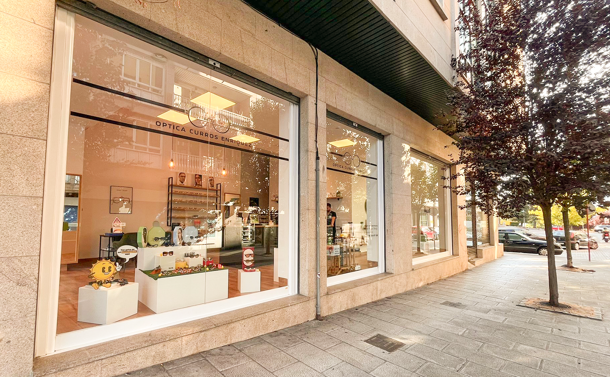
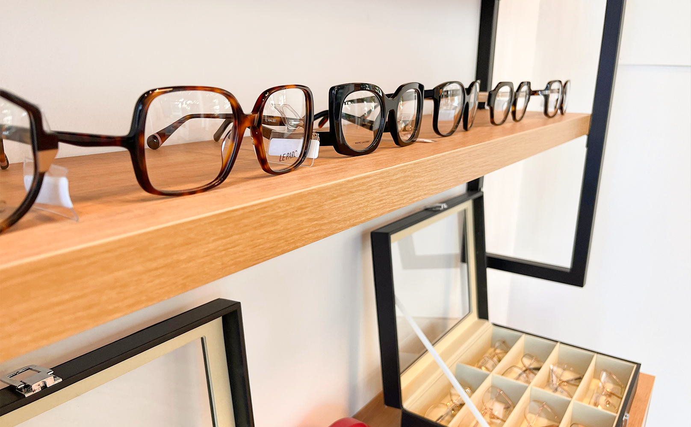
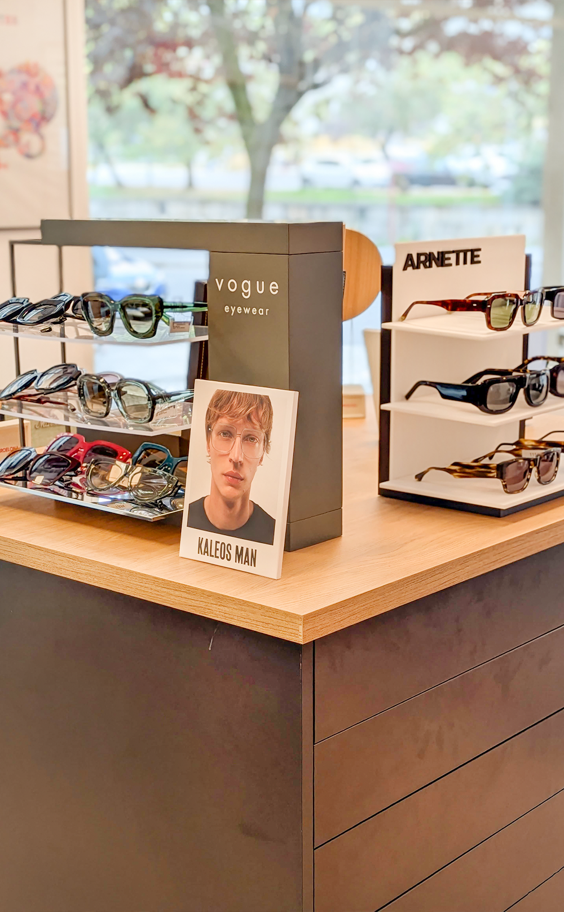
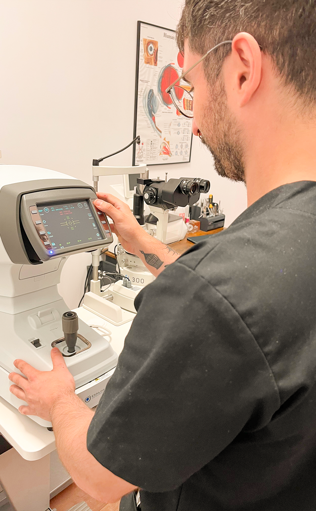
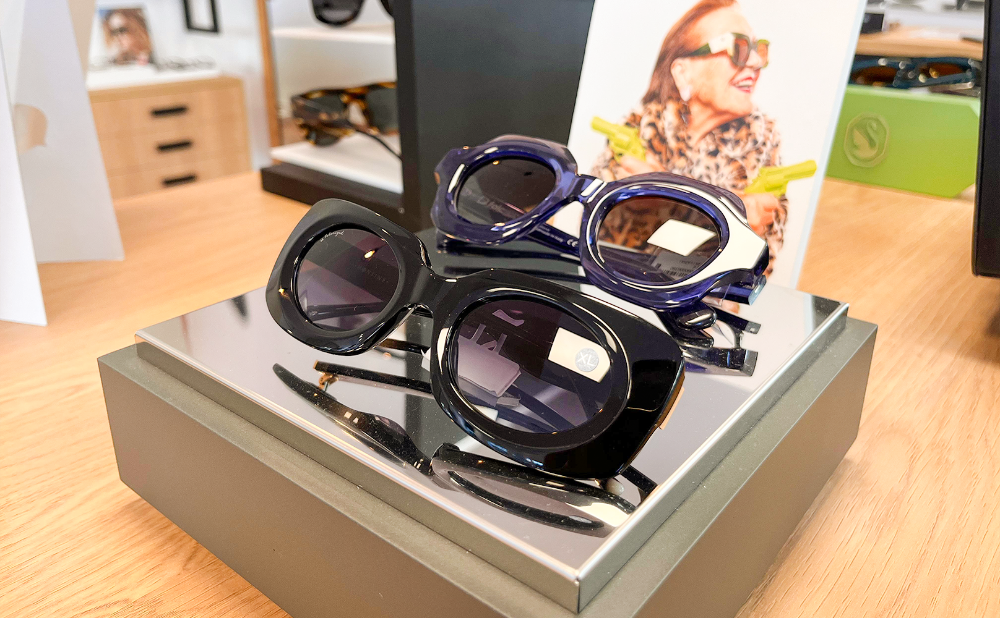
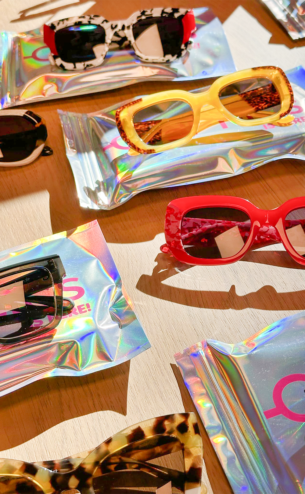
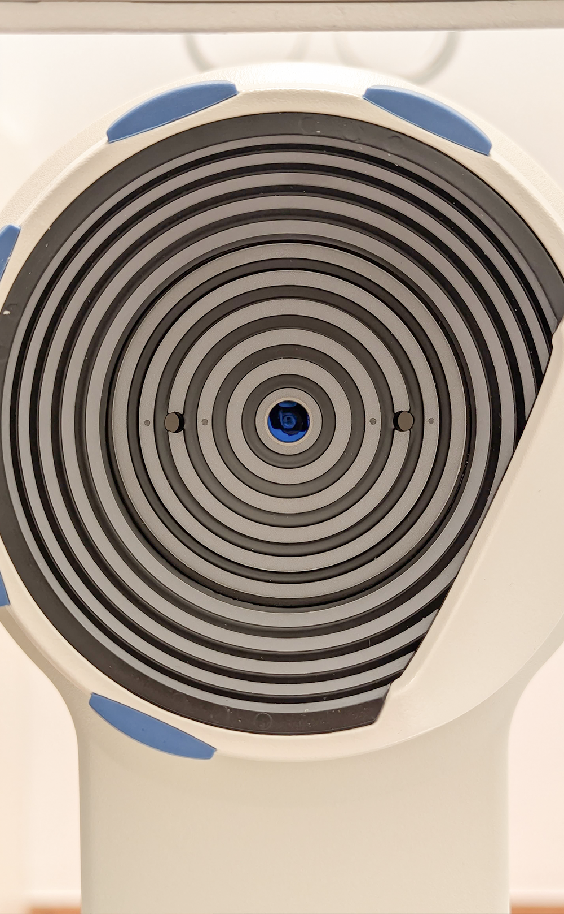
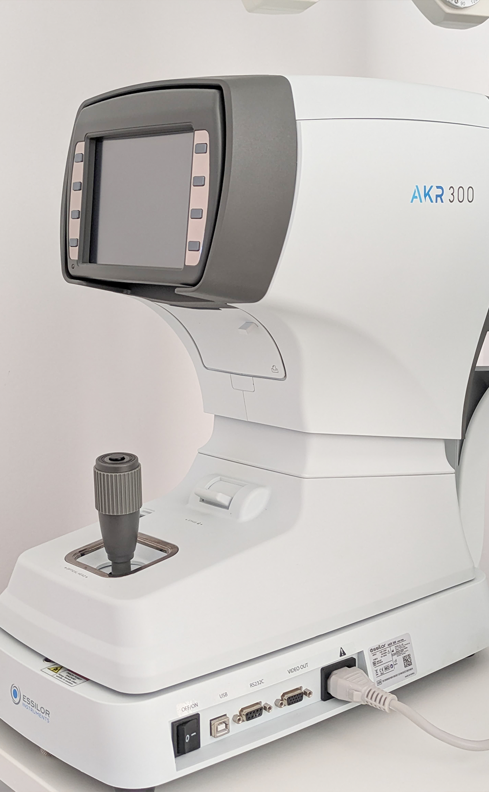
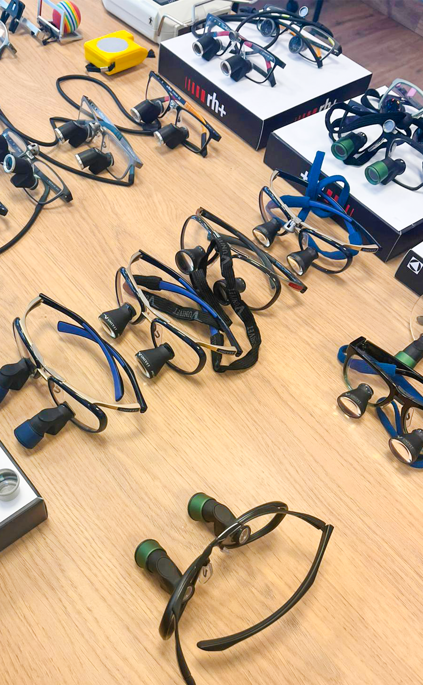
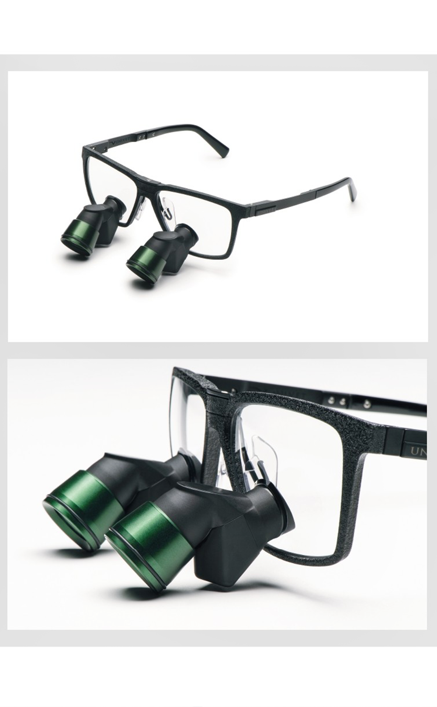

Conoce nuestras instalaciones, nuestro equipamiento y nuestra selección de monturas.
Cada rincón de Óptica Curros Enriquez está diseñado para ofrecerte comodidad, confianza y la mejor atención visual.










Estamos en pleno centro de Ourense. Pídenos cita y te atenderemos con la máxima dedicacion.